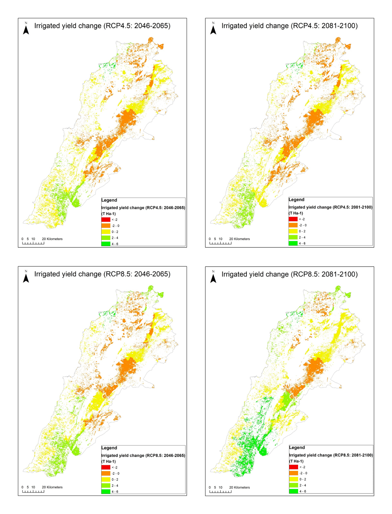

01 / MSc thesis · climate & crop modelling
Climate change impacts on agricultural systems in Lebanon
I assessed how a hotter, drier climate would affect wheat — the country’s main cereal crop, about two-thirds of cultivated cereals — through the rest of the century. I processed downscaled regional climate projections (EURO-CORDEX) for two emission scenarios (RCP 4.5 and 8.5) and two future periods (2046–2065 and 2081–2100) against a 1986–2005 baseline, then used the FAO AquaCrop model to simulate rainfed and irrigated wheat yield and water productivity for every agro-homogeneous zone in Lebanon, and mapped the results.
Projections showed rainfall falling 8–30% and temperatures rising 2–4.7 °C. Yield effects varied sharply by region — gains in Mount Lebanon and the South, losses elsewhere, near crop failure in Baalbek-Hermel. That regional split is the core finding: adaptation has to be planned locally, not nationally.
